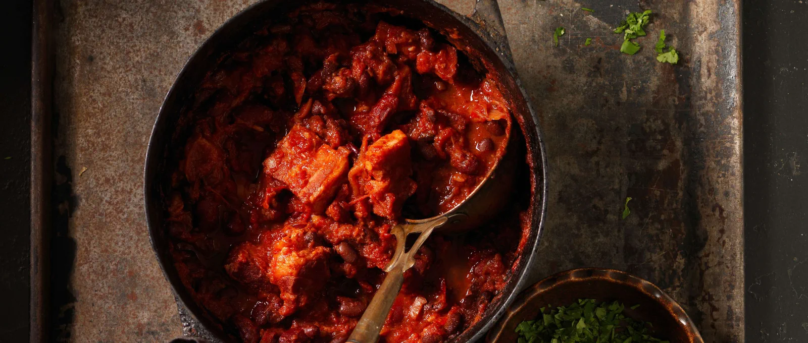

Bohneneintopf

Für vier Personen
Zutaten
- 100 g getrocknete Kidneybohnen
- 100 g getrocknete schwarze Bohnen
- 3 rote Chilischoten
- 150 g Zwiebeln
- 5 Knoblauchzehen
- 300 g Kochspeck
- 2 EL Erdnussöl
- 800 g geschälte Tomaten aus der Dose
- 1 EL Honig
- 1 TL Salz
- 1 TL edelsüsser Paprika
- 1/2 Bund Koriander
Vorgehen
- Am Vortag: Rote und schwarze Bohnen über Nacht in Wasser einweichen.
- Chilis halbieren, entkernen und fein schneiden.
- Zwiebeln in Streifen, Knoblauch in dünne Scheiben schneiden.
- Vom Kochspeck Knorpel und die etwas härtere Haut wegschneiden. Speck in ca. 12 Stücke teilen.
- Backofen auf 180 °C Unter-/Oberhitze vorheizen.
- In einer grossen Pfanne Öl erhitzen.
- Speck, Zwiebeln, Chilis und Knoblauch darin ca. 2 Minuten anbraten.
- Bohnen abgiessen und hinzufügen.
- Tomaten samt Saft und Honig zufügen.
- Kurz aufkochen und zugedeckt 2 Stunden in der unteren Ofenhälfte schmoren lassen.
- Mit Salz und Paprika würzen.
- Kurz vor dem Servieren Koriander hacken. Zum Chili servieren.
Quelle: Migusto Bohneneintopf